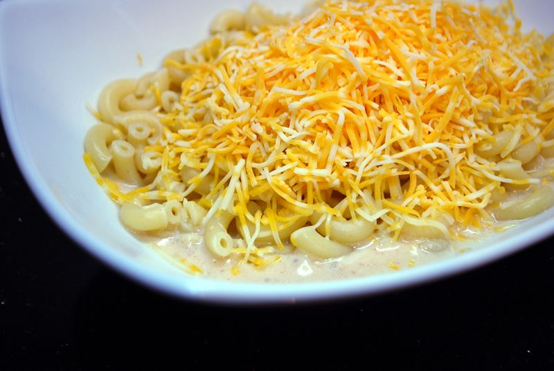

Mac and Cheese Recipe

Description
Simple mac and cheese recipe
Prep Time: 5 min
Total Time: 30 min
Servings: 4
Ingredients
- 1 lb macaroni noodles
- 2 tbsp butter
- 2 tbsp flour
- 2 cups half and half OR 2 cups whole milk
- 1/2 tsp salt
- 1/4 tsp ground pepper
- 2 cups monterey jack cheese, shredded
- 1 cup colby-monterey jack cheese, fine shred
- 1/4 cup fresh parsley, chopped
Instructions
- Cook the macaroni according to the directions to al dente. DO NOT OVERCOOK
- Head a sauce pan over medium heat. Add butter
to the pan and melt. Then add the flour.
Start to whist and make a roux. Whisk until the
butter misture starts to boil and bubble. Cook for
another minute until it starts to lightly brown
- Slowly whist in the cream. Continue to whisk and cook until it starts to thicken up
- Add the salt, pepper, paprika, and Monterey jack
cheese. Whisk until the cheese is melted. The sauce
will still be a little "liquidy"
- Pour about 1/2 cup of the cheese sauce into the bottom of a bowl.
Then add about 1 cup of cooked noodles over the sauce.
Top this with about 1/2 cup of the shredded colby jack.
Top with fresh parsley for color. Before you eat: mix it all
together in your bowl into delicious perfection.